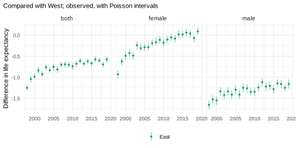
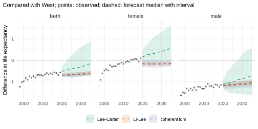
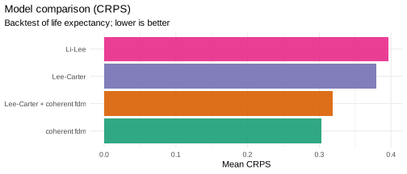
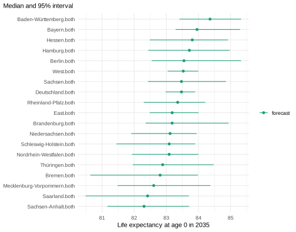
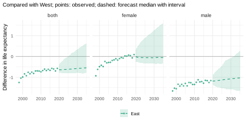
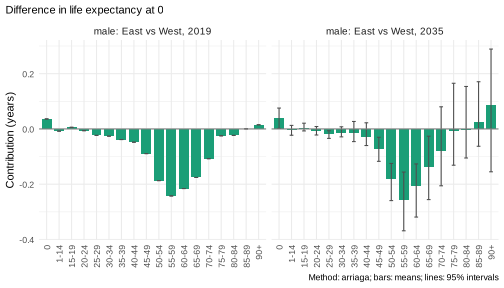

This vignette is precomputed
(dev/precompute-vignettes.R) because its backtests take
about 20 minutes.
How will life expectancy in the 16 German Laender develop until 2035, and will the remaining gap between East and West Germany close? This vignette answers with one complete pipeline: official tables with suppressed cells, a hierarchy of Laender, East and West and Germany, a model chosen in a backtest of both the Laender and the East-West gap, and forecasts that add up at every level. Each step refers to the vignette that explains it.
Data
de_deaths holds deaths by year, Land, sex, age group and
ICD-10 chapter (Destatis, published by the Federal Health Monitoring,
GBE-Bund); de_population the populations on 31 December by
single year of age (GENESIS-Online, table 12411-0013). Both are licensed
under the Datenlizenz Deutschland - Namensnennung - Version 2.0.
x <- mt_data(deaths = de_deaths, population = de_population, by = c("region", "sex", "cause"))
#> Warning in ingest_obs(x, by, age, period, value, measure, age_open, missing =
#> missing, : 41396 missing deaths value(s) left out; suppressed counts can be
#> estimated with mt_fill_suppressed().
x <- mt_as_exposure(x, type = "dec31")
x <- mt_subset(x, periods = c(1998, 2019))
x <- mt_regroup(x, age = "deaths")-
Exposures: the person-years of year t are
the mean of the populations on 31 December of t - 1 and
t (
type = "dec31"). - Years: 1998-2019, before the COVID-19 pandemic.
- Ages: the age groups of the deaths (0, 1-14, 15-19, …, 90+).
Suppressed cells. The warning says that the source
suppresses small counts. The published totals constrain them: the
Laender add up to Germany and the chapters to all causes.
mt_fill_suppressed() estimates the suppressed counts by
raking them to these totals (“Your own data”):
h_fill <- mt_hierarchy(region = "Deutschland", cause = list(total = "all", additive = "rates"))
x <- mt_fill_suppressed(x, h_fill)
attr(x, "fill")
#> filled missing inconsistent iterations max_gap
#> 1: 33225 0 0 1959 7.975615e-07All totals are matched (max_gap). For all causes only a
few cells at young ages were suppressed, so the estimates matter little
here.
The hierarchy
The 16 Laender by sex are the bottom series. East (with Berlin) and
West Germany, Germany, and both sexes are their sums. All forecasts
below are made for the 32 bottom series and summed
(reconciled(method = "bottom_up"), “Coherent forecasts:
totals and their parts”):
xa <- mt_subset(x, cause == "all", region != "Deutschland", drop = TRUE)
laender <- unique(mt_strata(xa)$region)
east <- c("Berlin", "Brandenburg", "Mecklenburg-Vorpommern", "Sachsen", "Sachsen-Anhalt",
grep("^Th", laender, value = TRUE))
h <- mt_hierarchy(region = list(total = "Deutschland", groups = list(West = setdiff(laender, east), East = east)),
sex = "both")
xh <- mt_aggregate_strata(xa, h)
mt_strata(xh, h)[, .N, by = level]
#> level N
#> 1: bottom 32
#> 2: aggregate 24
#> 3: total 1
bu <- function(model) reconciled(model, h, method = "bottom_up")The observed difference in life expectancy at birth between East and West:
gap_obs <- mt_contrast(xh, var = "region", ref = "West")
mt_plot_contrast(observed = gap_obs, levels = "East")
Women in the East caught up with the West by about 2014 and lived 0.1 years longer in 2019. Men in the East still live about 1.2 years less (1.7 years in 1998).
Model: a backtest of candidates
Small Laender such as Bremen and Saarland have few deaths per age group, so their rates are noisy. The candidates differ in how the Laender may move relative to each other (“Choosing and combining models”):
- Lee-Carter for each Land and sex: each Land continues its own trend;
- Li-Lee and the coherent fdm (product-ratio method with functional data models): the Laender of each sex share a common trend and deviate from it with stationary factors, so small Laender borrow strength from the others and gaps return towards their past level;
- the ensemble of Lee-Carter and the coherent fdm.
The East-West gap forecast by three of them:
cand <- list("Lee-Carter" = bu(lee_carter()), "Li-Lee" = bu(li_lee(common_by = "sex")),
"coherent fdm" = bu(coherent_fdm(common_by = "sex")),
"Lee-Carter + coherent fdm" = bu(ensemble(lc = lee_carter(), cf = coherent_fdm(common_by = "sex"))))
gaps <- lapply(cand[c("Lee-Carter", "Li-Lee", "coherent fdm")], function(m) {
mt_contrast(mt_forecast(mt_fit(m, xh), to = 2035, n_draws = 300, seed = 1), var = "region", ref = "West", at = 0)
})
mt_plot_contrast(gaps, observed = gap_obs, levels = "East")
The backtest fits each candidate to the years up to 2008, 2011 and
2014, forecasts the following five years, and scores the rates and life
expectancy of every series and the gap between each region and the West
(contrast, “Backtesting and scores”):
bt <- mt_compare(cand, xh, origins = c(2008, 2011, 2014), h = 5, n_draws = 200, quantities = "life_expectancy",
contrast = c(var = "region", ref = "West"))
mt_score_table(bt, metrics = c("crps", "cov95"), targets = c("rate", "life_expectancy"), hierarchy = h)
#> model level crps cov95 crps_le cov95_le
#> 1: Lee-Carter bottom 0.0923 0.776 0.379 0.754
#> 2: Lee-Carter aggregate 0.0681 0.627 0.381 0.444
#> 3: Lee-Carter total 0.0514 0.307 0.410 0.000
#> 4: Li-Lee bottom 0.0901 0.812 0.396 0.765
#> 5: Li-Lee aggregate 0.0654 0.732 0.366 0.683
#> 6: Li-Lee total 0.0507 0.589 0.346 0.533
#> 7: coherent fdm bottom 0.0825 0.825 0.303 0.619
#> 8: coherent fdm aggregate 0.0603 0.709 0.280 0.464
#> 9: coherent fdm total 0.0480 0.467 0.277 0.267
#> 10: Lee-Carter + coherent fdm bottom 0.0821 0.855 0.316 0.780
#> 11: Lee-Carter + coherent fdm aggregate 0.0592 0.750 0.303 0.561
#> 12: Lee-Carter + coherent fdm total 0.0454 0.481 0.322 0.267
mt_score_table(bt[region == "East" & sex != "both"], metrics = c("crps", "cov95"), targets = "life_expectancy_gap")
#> model crps_le_gap cov95_le_gap
#> 1: Lee-Carter 0.0749 1.000
#> 2: Li-Lee 0.1580 0.333
#> 3: coherent fdm 0.1480 0.400
#> 4: Lee-Carter + coherent fdm 0.0768 1.000
mt_plot_scores(bt[region %in% laender & sex != "both"], by = "model", target = "life_expectancy")
Lee-Carter continues the trends of 1998-2019: the gap of men keeps narrowing, and women in the East pull further ahead. Li-Lee and the coherent fdm hold the gaps near their recent level, with women in the East slightly behind again. The backtest decides between these assumptions:
- For the Laender, the ensemble and the coherent fdm are the most accurate (CRPS of the rates 0.0821 and 0.0825, against 0.090 for Li-Lee and 0.092 for Lee-Carter); the coherent fdm forecasts their life expectancy best (CRPS 0.303 years, ensemble 0.316). The ensemble’s intervals cover the rates best (95% coverage 0.855). The intervals of life expectancy are too narrow for every model (95% coverage 0.62 to 0.78).
- For the totals (East, West and Germany), the ensemble forecasts the rates most accurately, but all intervals are too narrow there (95% coverage of the rates of Germany 0.31 to 0.59). Lee-Carter forecasts each Land independently, so the deviations of its draws partly cancel in the totals: its intervals of life expectancy for Germany covered none of the 15 observed values.
- The East-West gap is forecast best by Lee-Carter and the ensemble (CRPS 0.075 and 0.077), whose intervals covered every observed gap; those of Li-Lee and the coherent fdm covered it in only 33% and 40% of the cases.
The ensemble of Lee-Carter and the coherent fdm forecasts the rates of the Laender as accurately as the coherent fdm alone, and the gap almost as accurately as Lee-Carter. No single model does as well on both, so the pipeline continues with the ensemble.
Jump-off
Starting the forecasts at the observed rates of the last year
(anchored(), Lee and Miller 2001; “Where a forecast starts:
the jump-off”), checked in the same backtest:
ens <- ensemble(lc = lee_carter(), cf = coherent_fdm(common_by = "sex"))
bt_anchor <- mt_compare(list("+ anchored" = bu(anchored(ens))), xh, origins = c(2008, 2011, 2014),
h = 5, n_draws = 200, quantities = "life_expectancy", contrast = c(var = "region", ref = "West"))
bt_steps <- rbind(bt[model == "Lee-Carter + coherent fdm"], bt_anchor)
mt_score_table(bt_steps[sex != "both"], metrics = c("crps", "cov95"))
#> model crps cov95 crps_le cov95_le crps_le_gap
#> 1: Lee-Carter + coherent fdm 0.0772 0.826 0.317 0.727 0.103
#> 2: + anchored 0.0844 0.818 0.312 0.725 0.102
#> cov95_le_gap
#> 1: 0.998
#> 2: 0.998Anchoring made the forecasts of the rates worse (CRPS 0.084 against 0.077): the observed rates of a single year carry their random variation into every forecast year, and those of small Laender are noisy. It made the forecasts of life expectancy slightly more accurate (0.312 against 0.317) and left those of the East-West gap nearly unchanged (0.102 against 0.103). In this example the jump-off changes little: the forecasts with and without it differ by about 0.005 years in the CRPS of life expectancy and 0.001 in that of the gap. The pipeline keeps it because the question concerns life expectancy and the gap and anchoring to the last observed year is the published practice (Lee and Miller 2001). With other data the effect can be larger or go the other way, so check it in a backtest.
Forecasts to 2035
fc <- mt_forecast(mt_fit(bu(anchored(ens)), xh), to = 2035, n_draws = 1000, seed = 1)Life expectancy at birth in 2035, both sexes, with 95% intervals:
e35 <- life_expectancy(fc)[period == 2035 & sex == "both"]
mt_plot_compare(list(forecast = fc), periods = 2035, strata = rev(e35[order(q0.5), label]))
The intervals of small Laender are the widest. The paths of the Laender add up to those of East, West and Germany, so these intervals are consistent with each other.
The East-West gap
The difference in life expectancy at birth between East and West Germany, path by path, with the observed differences:
gap <- mt_contrast(fc, var = "region", ref = "West", at = 0)
mt_plot_contrast(gap, observed = gap_obs, levels = "East")
gap[level == "East" & period %in% c(2025, 2035),
.(sex, period, gap = sprintf("%.2f (%.2f to %.2f)", q0.5, q0.025, q0.975))]
#> sex period gap
#> 1: female 2025 -0.06 (-0.33 to 0.88)
#> 2: female 2035 -0.05 (-0.34 to 1.59)
#> 3: male 2025 -1.14 (-1.54 to -0.46)
#> 4: male 2035 -1.03 (-1.66 to 0.29)
#> 5: both 2025 -0.62 (-0.80 to 0.01)
#> 6: both 2035 -0.55 (-0.79 to 0.63)In 2035, women in the East are forecast to live about as long as those in the West (0.05 years less, 95% interval -0.34 to 1.59), men 1.0 years less (-1.66 to 0.29). The forecast continues the slow narrowing of the male gap (1.14 years in 2025), but the gap most likely does not close by 2035.
Which ages make up the gap of men in 2019 and in 2035 (“Decomposing differences in life expectancy”):
dg <- mt_decompose(fc, var = "region", ref = "West", periods = c(2019, 2035))
mt_plot_decomposition(dg, by = "age", comparisons = list(to = "East", sex = "male"))
The male gap arises at ages 45 to 74, in 2019 as in 2035; at older ages the contributions are small and uncertain.
Summary of the pipeline
| Step | Decision here | Evidence | Function | Explained in |
|---|---|---|---|---|
| Exposures | mean of 31 December populations | mt_as_exposure(type = "dec31") |
“Your own data” | |
| Suppressed cells | raking to Land and national totals | all totals matched | mt_fill_suppressed() |
“Your own data” |
| Hierarchy | Laender, East and West, Germany; sexes |
mt_hierarchy(), mt_aggregate_strata()
|
“Coherent forecasts” | |
| Coherence | bottom-up sums of the Laender | reconciled(method = "bottom_up") |
“Coherent forecasts” | |
| Model | ensemble of Lee-Carter and coherent fdm | most accurate for the rates of the Laender, second for the gap |
ensemble(), coherent_fdm(),
mt_compare(contrast = )
|
“Choosing and combining models” |
| Jump-off | observed rates of the last year (Lee and Miller 2001) | slightly better life expectancy, gap nearly unchanged, worse rates | anchored() |
“Where a forecast starts” |
| Gap | East - West, path by path |
mt_contrast(), mt_decompose()
|
“Decomposing differences” |